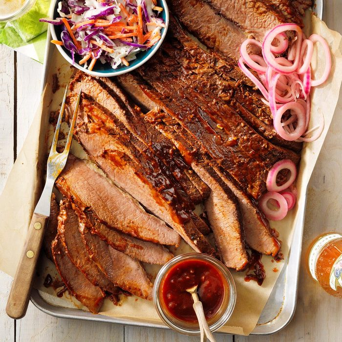

Ingredients
- 3 tablespoons Worcestershire sauce
- 1 tablespoon chili powder
- 2 garlic cloves, minced
- 1 teaspoon celery salt
- 1 teaspoon pepper
- 1 teaspoon liquid smoke, optional
- 1 fresh beef brisket (6 pounds)
- 1/2 cup beef broth
- 2 bay leaves
BARBECUE SAUCE
- 1 medium onion, chopped
- 2 tablespoons canola oil
- 2 garlic cloves, minced
- 1 cup ketchup
- 1/2 cup molasses
- 1/4 cup cider vinegar
- 2 teaspoons chili powder
- 1/2 teaspoon ground mustard
Directions
- In a large bowl or shallow dish, combine the Worcestershire sauce, chili powder, garlic, celery salt, pepper and, if desired, liquid smoke. Cut brisket in half; add to bowl and turn to coat. Cover and refrigerate overnight.
- Transfer beef to a 5- or 6-qt. slow cooker; add broth and bay leaves. Cover and cook on low for 6-8 hours or until meat is tender.
- For sauce, in a small saucepan, saute onion in oil until tender. Add garlic; cook 1 minute longer. Stir in the remaining ingredients; heat through.
- Remove brisket from the slow cooker; discard bay leaves. Place 1 cup cooking juices in a measuring cup; skim fat. Add to the barbecue sauce. Discard remaining juices.
- Return brisket to the slow cooker; top with sauce mixture. Cover and cook on high for 30 minutes to allow flavors to blend. Thinly slice beef across the grain; serve with sauce.